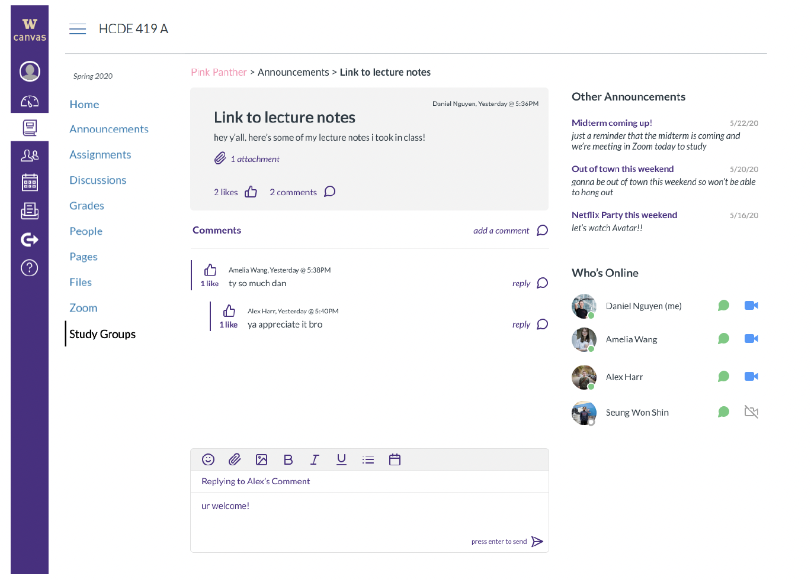
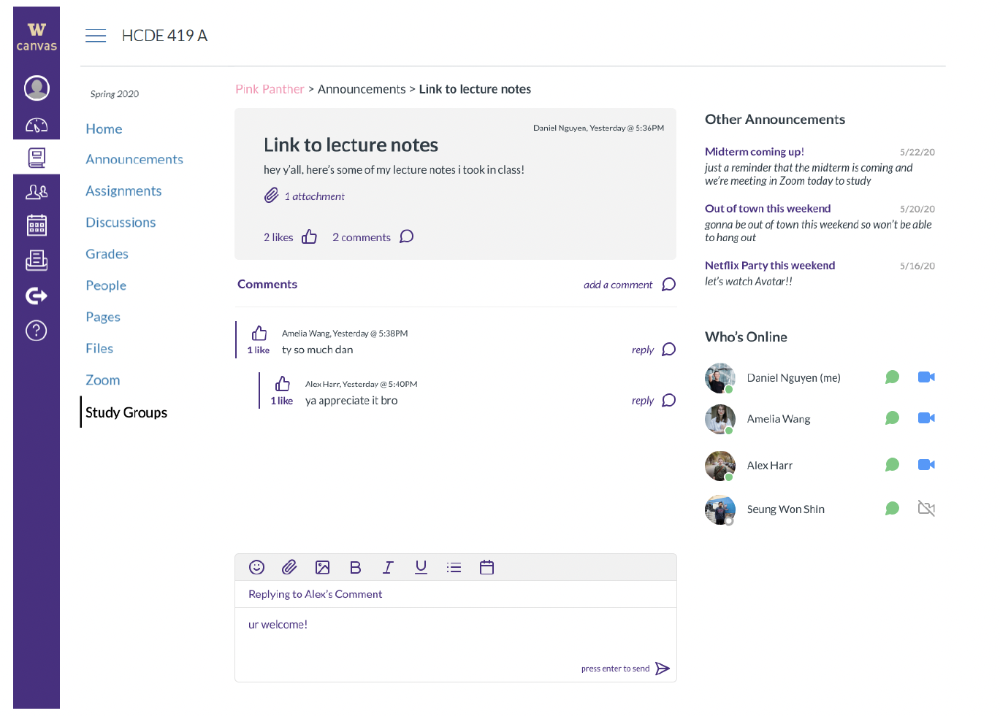

Background
For our project we partnered with UW Continuum College, an organization within UW dedicated to providing educational programs to meet the needs of all types of students. They tasked us with optimizing UW’s current learning management system (LMS), Canvas to better integrate online tools in order to provide a seamless and encouraging learning environment for students. Here, we explore the concept of expanding the scope of Canvas to encompass more than just grades, discussions, and quizzes and actually design learning modules for online course content.
RQ: How can we decrease the cognitive load of students taking online courses through Canvas and design better content learning modules using H5P, an interactive HTML library?
Project Objective:
In collaboration with UW Continuum College, our team aimed to optimize the University of Washington's Canvas Learning Management System (LMS) to provide a seamless and engaging learning environment for students. The project focused on reducing cognitive load and designing interactive learning modules using H5P, an HTML5 library.
Methodology:
Conducted a literature review to identify gaps in LMS optimization research and cognitive load in web design.
Brainstormed potential solutions addressing key business and user requirements.
Generated user flows depicting major user interactions within the platform.
Conducted multiple rounds of user testing to understand student experiences, test ideated concepts, and evaluate the interactive design.
Analyzed user feedback qualitatively to prioritize design improvements.
Key Findings:
Participants expressed interest in incorporating study groups, instant messaging, and a Stack Overflow-style Q&A system into Canvas.
User testing revealed the need to refine and clarify content while maintaining a cohesive and refreshed branding.

Design Solutions:
Developed high-fidelity mockups showcasing the "Study Groups" feature, addressing user feedback and enhancing the online learning experience.
Improved content clarity and maintained a consistent visual language throughout the redesign.
Impact:
The project's exploratory redesign of Canvas demonstrates the potential to optimize the learning experience for students enrolled in online courses. By reducing cognitive load and integrating interactive learning modules, the proposed solutions aim to create a more engaging and efficient learning environment.
 

Skills Demonstrated:
User research and analysis
UX design and prototyping
Collaboration with stakeholders
Problem-solving and iterative design
Thank you to UW Continuum College and UW HCDE for your guidance and support! All of our methods, data, and final screens are available in our project proposal and final milestone: